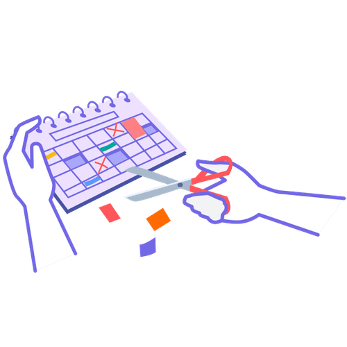

Mit der Academy erhaltet ihr im Business-Plan praxisnahe Lernmodule rund um Facilitation und wirksame Transformation.
Gemeinsam mit 9 Spaces zeigt Plan International Deutschland, wie wertebasiertes Arbeiten Orientierung gibt – nach innen wie nach außen.

Ein Tool, das dir dabei hilft, nur noch in nützlichen Meetings zu sitzen
Dieses Tool hilft euch dabei, durch einheitliches Vokabular mehr Klarheit und Ergebnisorientierung in Meetings zu bringen.
Ein Tool, das Teams dabei hilft, Variablen für richtig gute Meetings zu definieren und Meeting-Regeln abzuleiten.
Ein Tool, das euch im Team dabei hilft zu bewerten, wie viel Zeit ihr in Meetings verbringt – und was sich daran ändern soll